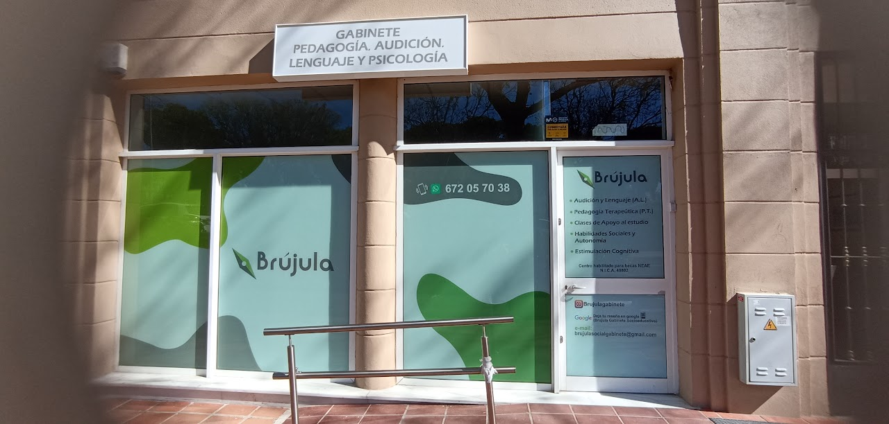

En Brújula Social, trabajamos para transformar el impacto social a través de ideas creativas y estrategias efectivas. Nos enfocamos en generar un cambio positivo en tu comunidad.
Brújula Social tiene como misión fomentar el desarrollo y bienestar de las comunidades a través de soluciones innovadoras que generen un impacto real y positivo.
Ser la red de referencia en la transformación social, creando espacios colaborativos donde las comunidades puedan desarrollar su potencial y mejorar su calidad de vida.
Compromiso, colaboración, innovación, sostenibilidad y transparencia son los valores que guían cada uno de nuestros proyectos.
La asociación Brújula Gabinete Socioeducativo y Psicológico, lleva desde 2014 trabajando con un gran equipo de profesionales de la audición y lenguaje, la pedagogía, la psicología y la orientación familiar.
Luchamos por una sociedad en la que todas las personas podamos disfrutar de una vida completa sin barreras sociales, económicas, culturales, ideológicas, etc. Por ello, la inclusión, la solidaridad, la lucha por la igualdad, los derechos humanos y el derecho a la salud mental son nuestros pilares fundamentales.
Necesitamos hacer un gran trabajo de sensibilización social incidiendo, sobre todo, en la población infantojuvenil. Crear comunidad y hacer que las personas se sientan valoradas con una red social sólida posibilita que, la persona se empodere y participe en su proyecto personal de manera activa, con el fin de lograr su autonomía.
Asesoría para implementar estrategias sociales que marquen la diferencia. Creamos planes que conectan tu visión con los objetivos sociales y ambientales de tu comunidad.
Desarrollamos proyectos innovadores y sostenibles para tu comunidad. Desde la planificación hasta la ejecución, cuidamos cada detalle para garantizar su éxito.
Capacitación para equipos en temas de impacto social y liderazgo. Ofrecemos talleres prácticos, formación continua y programas de desarrollo personal y profesional.
¿Tienes alguna pregunta o comentario? ¡Nos encantaría saber de ti! Completa el siguiente formulario y nos pondremos en contacto contigo lo antes posible.